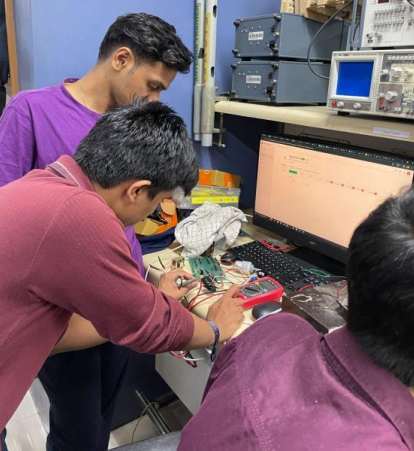
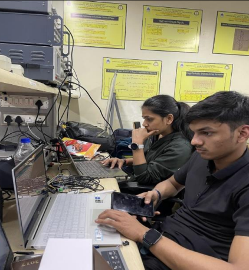

About Us
The Team IETE-ISF of Dwarkadas J Sanghvi College of Engineering, Mumbai made history by organising the 24-hour National Hardware Hackathon “UnPlugged 2.0” on the 9th and 10th of March 2024. This ground-breaking event attracted teams from various corners of India, bringing together some of the brightest minds in the field of hardware innovation.


Unplugged 2.0 aimed to provide a platform for aspiring engineers, inventors, and tech enthusiasts to showcase their skills, creativity and problem-solving abilities. The event focused on hardware-based projects, challenging participants to bring their innovative ideas to life within a compressed time frame.
The IETE-ISF National Hardware Hackathon “Unplugged 1.0” held at Dwarkadas J Sanghvi College of
Engineering stands as a testament to the boundless creativity and technological prowess within the
academic and engineering communities of India..